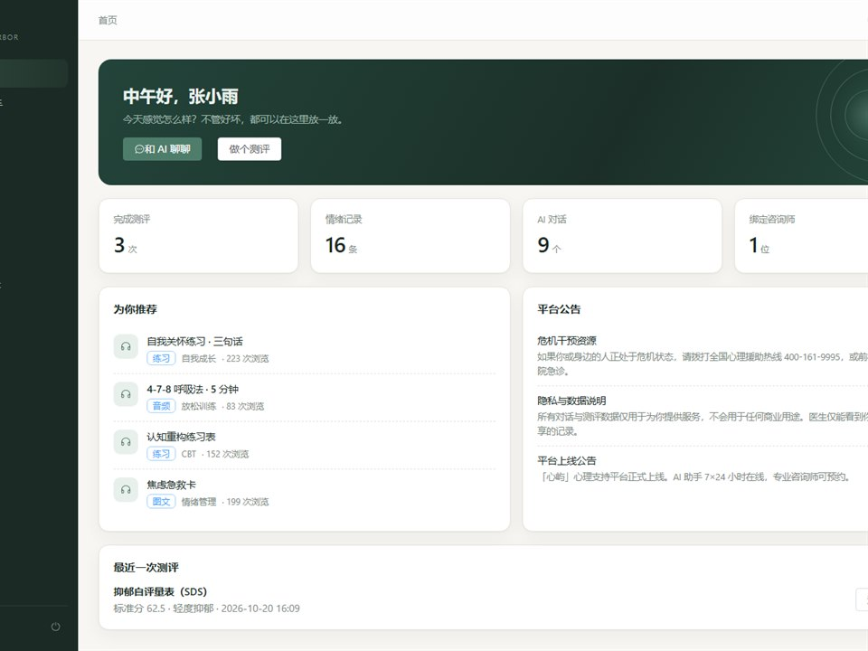

心屿 MindHarbor
★ 1ovo-pwp/mindharbor · Java · 2026-10-22
AI 心理健康咨询系统，Spring Boot 3.2 + Vue 3 前后端分离，覆盖患者、咨询师、 管理员三种角色的完整业务闭环。AI 对话走通义千问并按 SSE 流式返回， 无 Key 时自动降级为本地共情引擎；含 SDS / SAS 心理测评的自动计分与分级。
- Spring Boot 3.2
- Vue 3
- MyBatis-Plus
- Sa-Token
- 通义千问